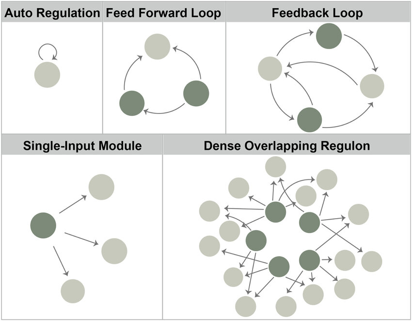
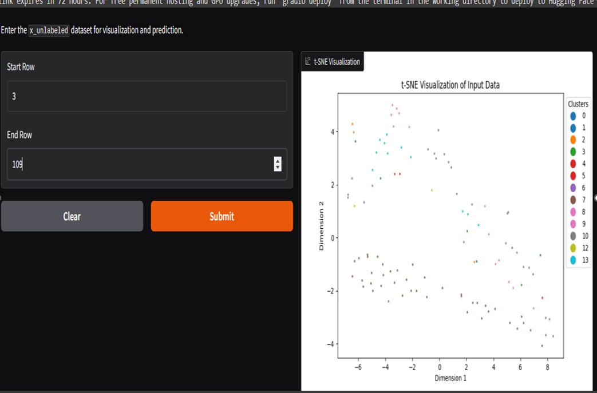

Hey, I am
ANUJ KADAM
Computer Science & Engineering Student
Passionate about Coding & AI
Innovative Problem Solver
Lifelong Learner & Tech Enthusiast
Computer Science & Engineering Student
Passionate about Coding & AI
Innovative Problem Solver
Lifelong Learner & Tech Enthusiast
I have experience with a range of technologies, including:
Projects like an AI-based voice assistant and a full-stack job portal demonstrate my ability to build end-to-end solutions.


D Y Patil Agriculture and Technical University, Talsande
Expected Graduation: 2026
Ashwantrao Chavan Warana Mahavidyalaya (YCWM) | 2022 | 60.83%
Shree Warana Vidhyalaya Warnanagar | 2019 | 87.20%